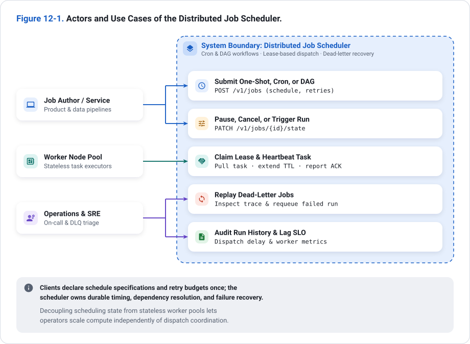
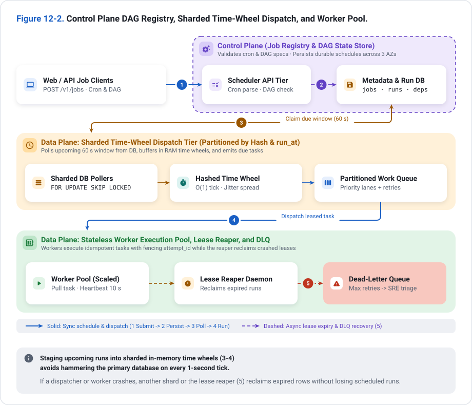

Chapter 12: Distributed Job Scheduler

Large backend systems execute millions of tasks asynchronously outside the lifecycle of any user-facing HTTP request: transcoding uploaded videos, erasing closed accounts after a 30-day compliance window, reconciling nightly financial ledgers at 02:00 UTC, or orchestrating multi-stage data pipelines. A distributed job scheduler accepts one-shot, delayed, recurring (cron), and DAG-chained jobs, persists them durably, dispatches each due execution to a worker fleet, and recovers automatically when workers crash or stall mid-flight.
The core systems challenge is partial observability. Once the scheduler hands a job to a worker, it cannot observe the worker’s CPU or memory directly; it observes only network heartbeats and completion reports. A silent worker may have crashed, suffered a long pause, or completed the job while losing its completion response on the wire. In this chapter, I design a durable, horizontally scalable distributed job scheduler. We define actors, requirements, and capacity bounds, specify job/lease APIs and PostgreSQL FOR UPDATE SKIP LOCKED schemas, separate the DAG/cron registry (control plane) from sharded timing-wheel dispatchers (data plane), and engineer lease fencing, cron DST/idempotency guarantees, priority fairness, and dead-letter recovery.
In this chapter, we cover
- job lifecycle state machine, actors, functional contracts, dispatch latency SLOs, non-goals, and throughput/storage bounds
- REST/gRPC job submission, worker lease claiming, heartbeat extension, result fencing, and relational job-store DDL
- separation of DAG and cron registry (control plane) from sharded DB pollers, hashed timing wheels, and worker pools (data plane)
- hierarchical timing wheels versus sharded database polling with
SELECT ... FOR UPDATE SKIP LOCKED - lease-based claiming, monotonic
attempt_idfencing against zombie workers, and at-least-once idempotent execution - recurring cron idempotency, UTC scheduling against Daylight Saving Time discontinuities, missed-run policies, priority aging, and per-tenant fair queuing
- operational failure modes, lag SLIs, production schedulers (Google Distributed Cron, Temporal, Apache Airflow, Quartz), and simulation verification
12.1 Requirements, Actors, and Capacity Bounds
Actors and Use Cases
We organize the distributed job scheduler around three actors: job authors and upstream services submitting one-shot, cron, or DAG workflows; stateless execution workers claiming bounded leases and reporting outcomes; and platform operators auditing dispatch lag and replaying dead-letter jobs (Figure 12-1).

| Actor | Operation | Concrete Scenario |
|---|---|---|
| Job Author / Service | Submit one-shot, delayed, cron, or DAG jobs (POST /v1/jobs); pause/cancel (PATCH) | Schedule a 30-day account purge, a nightly 02:00 UTC ledger close, or a 3-step ETL pipeline |
| Execution Worker | Claim lease (POST /v1/leases), extend TTL heartbeat, report ACK/NACK (PUT) | Pull due jobs matched to its queue pool, renew leases during long runs, and return fenced outcomes |
| Platform Operator | Inspect and replay dead-letter jobs; audit dispatch lag and retry spikes | Diagnose a defective worker release causing mass DLQ growth and replay failed runs after rollback |
Functional Requirements
| No. | Functional Requirement |
|---|---|
| 0 | Callers can submit immediate jobs, delayed future jobs (run_at), recurring cron schedules, and parent-child DAG workflows with explicit retry budgets and priority tiers. |
| 1 | The scheduler dispatches each due job under a time-bounded lease with a monotonic attempt_id so at most one worker is actively assigned a given run at claim time. |
| 2 | Workers renew active leases via periodic heartbeats for long-running tasks and submit completion or failure results fenced by attempt_id. |
| 3 | Transient worker crashes, lease timeouts, or retryable errors requeue the job with jittered exponential backoff; exhausting max_attempts (5 default) transitions the job to a durable Dead-Letter Queue (DEAD) state for inspection and manual replay. |
| 4 | Callers and operators can query live job state, attempt history, and last failure diagnostics, and can pause, cancel, or trigger ad-hoc runs. |
Non-Functional Requirements and SLOs
| No. | Property | Target Specification | Architectural Consequence |
|---|---|---|---|
| 0 | Durability | Zero lost submitted jobs across scheduler node or storage primary crashes | All job definitions and state transitions persist to a synchronously replicated multi-AZ job store before returning 201 Created |
| 1 | Dispatch Latency (Precision) | p50 <= 200 ms, p99 <= 1.0 s lag from scheduled run_at to worker lease claim | Pure cold DB polling at 5-second intervals misses sub-second precision; requires sharded 60-second lookahead buffers feeding in-memory hashed timing wheels |
| 2 | State Consistency | Strongly consistent job-state transitions (`PENDING -> LEASED -> RUNNING -> SUCCEEDED | DEAD`) |
| 3 | Execution Semantics | At-least-once execution (never dropped without notice; jobs must be idempotent) | Because lease expiration cannot distinguish a crashed worker from a stalled worker, safe jobs enforce idempotency keys |
| 4 | Scale | 10,000,000 jobs/day (116 avg jobs/s, 1,160 peak jobs/s); 500,000 active recurring cron definitions | Horizontally sharded job-run tables (16 to 64 partitions by hash(job_id) and run_at) and stateless auto-scaled dispatchers/workers |
Non-Goals and Scope Boundaries
- Exactly-once side effects without job cooperation: No scheduler can guarantee an uncooperative external side effect runs once across worker network partitions. Jobs performing financial or external mutations must carry deterministic idempotency keys (Chapter 10 and Chapter 11).
- Sub-millisecond real-time control loops: Networked distributed schedulers operate at
100 msto1 sdispatch precision, rather than hard real-time microsecond kernel interrupts. - Arbitrary unbounded worker execution without heartbeats: Workers running multi-hour jobs must checkpoint progress and renew short leases rather than requesting 24-hour fixed leases that block crash recovery for a full day.
Back-of-the-Envelope Capacity Bounds
| Resource Dimension | Arithmetic Derivation | Provisioned Bound |
|---|---|---|
| Average / Peak Job Rate | 10,000,000 jobs / 86,400 s = 115.7 avg/s; 10x burst factor | 116 avg jobs/s; 1,160 peak jobs/s (top-of-the-hour cron spikes can hit 5,000 jobs/s for 10 s) |
| State-Transition Write IOPS | Each job averages 4 state updates (INSERT, CLAIM, HEARTBEAT, COMPLETE) * 1,160 peak | ~4,640 transactional DB writes/s peak (1 high-IOPS primary or 4 sharded primaries easily sustain 20,000+ TPS) |
| 30-Day Hot Run Storage | 10,000,000 jobs/day * 30 days * 1.5 KB (payload + audit + indexes) | 450 GB hot NVMe storage (1.35 TB across 3 replicas); older completed runs archive to object storage |
| 60-Second Lookahead Wheel RAM | 5,000 peak jobs/s * 60 s * 256 B timer entry | ~76.8 MB across dispatch fleet (fits comfortably inside RAM) |
| Worker Fleet Sizing | Assuming 2 s mean job duration at 1,160 peak jobs/s -> 2,320 concurrent in-flight jobs; 10 concurrent slots/worker | ~232 stateless workers (auto-scaled horizontally by queue depth and dispatch lag) |
12.2 External API and Data Contracts
We design the scheduler around pull-based worker claiming (POST /v1/leases) so overloaded or draining workers stop requesting work automatically without requiring the scheduler to maintain a live capacity registry for every worker container.
Submission, Lease Claim, Heartbeat, and Fenced Result APIs
Submit a job (POST /v1/jobs):
Callers supply Idempotency-Key so retrying after a network timeout returns the original job ID rather than scheduling duplicate work.
POST /v1/jobs HTTP/2
Host: scheduler.internal
Content-Type: application/json
Idempotency-Key: video-transcode-88412
{
"queue": "media-transcode",
"priority": 1,
"run_at": "2026-10-14T09:00:00Z",
"max_attempts": 5,
"lease_ttl_seconds": 30,
"payload": { "asset_id": "vid_992", "profiles": ["720p", "1080p"] }
}
HTTP/2 201 Created
Location: /v1/jobs/8231
Content-Type: application/json
{
"job_id": "8231",
"state": "PENDING",
"attempt_id": 0,
"run_at": "2026-10-14T09:00:00Z"
}
Claim a due job lease (POST /v1/leases):
Returns 201 Created with the job payload and monotonic attempt_id, or 204 No Content when no jobs are due.
POST /v1/leases HTTP/2
Host: scheduler.internal
Content-Type: application/json
{
"worker_id": "worker-az-a-04",
"queues": ["media-transcode"],
"lease_ttl_seconds": 30
}
HTTP/2 201 Created
Location: /v1/leases/771
Content-Type: application/json
{
"lease_id": "771",
"job_id": "8231",
"attempt_id": 1,
"expires_in_seconds": 30,
"payload": { "asset_id": "vid_992", "profiles": ["720p", "1080p"] }
}
Extend lease heartbeat (POST /v1/leases/{lease_id}:renew) and Report fenced outcome (PUT /v1/jobs/{job_id}/results/{attempt_id}):
PUT /v1/jobs/8231/results/1 HTTP/2
Host: scheduler.internal
Content-Type: application/json
{
"worker_id": "worker-az-a-04",
"outcome": "SUCCEEDED",
"retryable": false
}
HTTP/2 204 No Content
If attempt_id = 1 has already been superseded by a reclaimer reissuing attempt_id = 2, the scheduler rejects the stale completion with 409 Conflict, preventing the zombie worker from corrupting the active attempt’s state.
Relational Job-Run Schema and Atomic Claim Query
CREATE TABLE job_runs (
job_id BIGINT PRIMARY KEY,
idempotency_key TEXT UNIQUE NOT NULL,
queue_name TEXT NOT NULL,
tenant_id TEXT NOT NULL,
priority SMALLINT NOT NULL DEFAULT 5,
state TEXT NOT NULL, -- PENDING, LEASED, RUNNING, SUCCEEDED, DEAD
attempt_id INT NOT NULL DEFAULT 0,
max_attempts INT NOT NULL DEFAULT 5,
run_at TIMESTAMPTZ NOT NULL,
lease_owner TEXT,
lease_expires_at TIMESTAMPTZ,
payload JSONB NOT NULL,
last_error TEXT
);
-- Covering partial index so due-job queries touch only PENDING rows:
CREATE INDEX idx_job_runs_due
ON job_runs (queue_name, priority ASC, run_at ASC)
WHERE state = 'PENDING';
-- Covering partial index for fast lease-expiry reclamation:
CREATE INDEX idx_job_runs_expired_leases
ON job_runs (lease_expires_at ASC)
WHERE state IN ('LEASED', 'RUNNING');
12.3 High-Level Architecture: Control Plane vs. Data Plane
We separate durable schedule validation, cron rule parsing, and DAG dependency storage (control plane) from high-frequency timer dispatch, lease claiming, and worker execution (data plane) (Figure 12-2).

Component Responsibilities and Failure Domains
| Component | Plane | State Held | Failure Impact and Mitigation |
|---|---|---|---|
| Scheduler API Tier | Control | Stateless validators, cron parser, DAG acyclicity checker | Horizontally scaled behind L7 load balancers across 3 AZs; node loss has zero state impact |
| Metadata and Run DB (Sharded SQL) | Control / Durable | Authoritative cron_specs, dag_edges, and job_runs tables replicated synchronously across 3 AZs | Primary crash triggers automatic synchronous replica failover in < 10 s with zero lost jobs |
| Sharded Time-Wheel Dispatchers | Data | In-memory 60-second lookahead hashed timing wheel partitioned by shard_id | Completely reconstructible state; if a dispatcher crashes, its shard lease transfers to a standby dispatcher that reloads the next 60 s window from the DB |
| Lease Reclaimer Daemon | Data | Stateless sweep loop querying idx_job_runs_expired_leases every 2 s | Active-standby via distributed lock (Chapter 10); because reclaiming uses conditional WHERE attempt_id = $a, momentary dual execution is completely harmless |
| Worker Pools (Per Queue / Priority) | Data | Ephemeral task execution context and active lease heartbeat loop | Worker crash leaves job leased until lease_expires_at, when the reclaimer returns it to PENDING with incremented backoff |
Hot Data Path Walkthrough
- Durable Submission: A client sends
POST /v1/jobs. The Scheduler API verifiesIdempotency-Key, checks DAG acyclicity if parent dependencies exist, and inserts aPENDINGrow into the synchronously replicated Run DB. - 60-Second Lookahead Prefetch: Sharded DB Pollers query their assigned partition every
10 secondsforPENDINGjobs whoserun_at <= NOW() + 60 seconds, buffering lightweight(job_id, run_at, priority)handles into an in-memory Hashed Timing Wheel. - Sub-Second Wheel Release & Atomic Claim: When the timing wheel tick reaches
run_at, the dispatcher makes the job claimable. A worker callsPOST /v1/leases, executing an atomicFOR UPDATE SKIP LOCKEDclaim that transitionsstate = 'LEASED', incrementsattempt_id, and setslease_expires_at = NOW() + 30 s. - Execution, Heartbeat, and DAG Fan-Out: The worker executes the task, renewing
lease_expires_atevery10 swhile progress advances. OnPUT /v1/jobs/{id}/results/{attempt_id}, the Run DB validatesattempt_id, marksSUCCEEDED, and atomically decrements remaining-parent counters for any downstream DAG child jobs, promoting ready children toPENDING.
12.4 Scheduling Engines: Hierarchical Timing Wheels vs. SKIP LOCKED Polling
Scaling Delayed Execution with Hierarchical Timing Wheels
Querying a central SQL table every 100 ms across 50 dispatchers to fire delayed jobs creates severe B-tree read contention, whereas polling every 10 seconds violates our <= 1 s dispatch precision SLO.
We solve both problems with a two-tier architecture pairing durable relational storage with in-memory Hashed and Hierarchical Timing Wheels (Varghese and Lauck, SOSP 1987):
- Long-Horizon Storage (Database): Millions of jobs scheduled hours, days, or months ahead stay cheaply on disk in
job_runsindexed by(shard_id, run_at)without consuming RAM. - Short-Horizon Precision (Hierarchical Timing Wheel in RAM): Each shard dispatcher maintains an in-memory circular array of buckets (for example,
600buckets at100 msresolution covering60 seconds, plus a coarse upper wheel if wider horizons are needed). Inserting a job into bucket(current_tick + delta_ticks) mod 600takesO(1)time, and advancing the tick pointer every100 msharvests all due timers inO(1)amortized work per timer rather thanO(log N)heap sift operations.
Because the database remains the durable source of truth, a dispatcher crash loses zero jobs: the replacement dispatcher reads the next 60 seconds of PENDING rows from idx_job_runs_due and rebuilds its wheel in milliseconds.
Lock-Free Worker Claiming with SELECT ... FOR UPDATE SKIP LOCKED
Transitioning a job from PENDING to LEASED must guarantee that at most one worker claims each due run. Reading a PENDING row and issuing a separate UPDATE introduces a classic check-then-act race illustrated in Interactive Trace 12.A, where two idle workers both read Job 1 as waiting and both start executing it simultaneously.

A single compare-and-set update (UPDATE job_runs SET state = 'LEASED' WHERE job_id = $1 AND state = 'PENDING') prevents double claiming, but under 200 concurrent workers polling the same queue, 199 workers collide on the oldest job, fail their CAS, and retry in a lockstorm.
PostgreSQL and MySQL 8 eliminate worker contention natively with SELECT ... FOR UPDATE SKIP LOCKED:
WITH claimed AS (
SELECT job_id
FROM job_runs
WHERE queue_name = $1
AND state = 'PENDING'
AND run_at <= NOW()
ORDER BY priority ASC, run_at ASC
LIMIT 1
FOR UPDATE SKIP LOCKED
)
UPDATE job_runs j
SET state = 'LEASED',
attempt_id = j.attempt_id + 1,
lease_owner = $2,
lease_expires_at = NOW() + make_interval(secs => $3)
FROM claimed
WHERE j.job_id = claimed.job_id
RETURNING j.job_id, j.attempt_id, j.payload;
When Worker 1 locks row 8231, Worker 2 skips locked row 8231 immediately without blocking and locks row 8232 on its first round trip. Throughput scales linearly with worker concurrency with zero lock-wait stalls.
12.5 Leases, Attempt Fencing, Cron Hazards, and Multi-Tenant Fairness
Lease Reclamation and Monotonic attempt_id Fencing
Figure 12-3 and Interactive Trace 12.B trace the full lifecycle of a worker crash and lease recovery. When Worker 1 crashes mid-execution, its lease expires at lease_expires_at. The reclaimer executes an atomic conditional update transitioning the job back to PENDING (with jittered exponential backoff run_at = NOW() + backoff) so Worker 2 claims it with attempt_id = 2.

attempt_id fencing, and DLQ transition.
Because lease expiry cannot prove that Worker 1 is dead (it may have stalled on a slow RPC or GC pause), every state update from a worker carries its attempt_id as a fencing token:
UPDATE job_runs
SET state = 'SUCCEEDED', lease_owner = NULL
WHERE job_id = $1
AND attempt_id = $2
AND state IN ('LEASED', 'RUNNING');
If zombie Worker 1 wakes up after Worker 2 has already claimed attempt_id = 2, Worker 1’s report with attempt_id = 1 matches 0 rows and receives 409 Conflict. Workers also distinguish permanent non-retryable failures (malformed JSON, deleted user account, HTTP 400) from transient failures (503, timeouts), moving permanent errors directly to DEAD without wasting four retries.
Recurring Cron Jobs: Idempotency, UTC vs. DST, and Missed-Run Policies
Evaluating recurring cron schedules across multiple scheduler nodes introduces three classic production bugs:
- Duplicate Firing Across Scheduler Replicas: Relying solely on leader election risks double-firing during leadership handoffs. Instead, every cron trigger constructs a deterministic idempotency key from
(schedule_id, scheduled_epoch_utc)(for example,cron:nightly-billing:2026-10-14T02:00:00Z) and inserts intojob_runswithON CONFLICT (idempotency_key) DO NOTHING. Any number of scheduler nodes can evaluate the same minute tick concurrently, and the database guarantees exactly one run row is created. - Daylight Saving Time (DST) Discontinuities: A job scheduled at
02:30local time does not exist on the spring-forward night and occurs twice on the fall-back night. We store and evaluate all schedules internally in UTC (or require explicit timezone-aware policies defining skip vs. shift semantics for DST transitions). - Explicit Missed-Run Policy (
misfire_policy): If the cluster is unavailable from01:55to02:10, every recurring job must declare one of three explicit policies:RUN_ONCE(default for nightly reports): fire a single catch-up run on recovery.SKIP(for ephemeral notifications or minute-level health pings): discard missed ticks and wait for the next future tick.CATCH_UP(for hourly billing partitions): materialize every missed slot sequentially (capped by a concurrency limit so180missed ticks do not launch simultaneously).
Priority Aging and Per-Tenant Fair Queuing
Strict priority ordering (ORDER BY priority ASC) causes starvation when continuous P0 traffic prevents P3 maintenance jobs from ever executing. Similarly, a shared FIFO queue lets one noisy tenant submitting 500,000 export jobs delay every other tenant’s interactive jobs for hours. We counter both pathologies with:
- Dedicated Priority Pools + Priority Aging: Reserve explicit minimum worker capacity for each tier (for example,
60% P0,30% P1,10% P2/P3) and compute an effective scoreeffective_priority = base_priority - floor(wait_seconds / aging_interval)so neglected jobs climb steadily in urgency. - Per-Tenant Concurrency Caps and Weighted Fair Queuing: Track
active_running_jobs[tenant_id]and enforce a per-tenant in-flight ceiling (max_concurrent_per_tenant) while selecting across active tenant queues via Deficit Round Robin (DRR).
12.6 Failure Modes, SLIs, and Production Systems
Failure and Recovery Matrix
| Failure Mode | Operational Symptom | Automated Mitigation |
|---|---|---|
| Worker Crash Mid-Job | Job remains RUNNING until lease_expires_at (30 s) | Reclaimer detects expired lease via partial index, transitions job to PENDING with jittered backoff, and dispatches attempt N + 1 |
| Zombie Worker Stalls Past Lease | Two workers execute concurrently; late worker reports stale result | attempt_id fencing rejects late completion with 409 Conflict; idempotent job handlers prevent duplicate external side effects |
| Dispatcher Crash (Lost Timing Wheel) | < 2 s dispatch pause for 1/S of shards | Standby dispatcher claims shard lease and reloads the next 60 s window from job_runs in < 200 ms with zero job loss |
Top-of-Hour Cron Thundering Herd (00:00) | 50x burst of recurring jobs firing at the exact same second | Support hash-jittered cron windows (H * * * *) spreading non-time-critical jobs across the minute, plus worker pool autoscaling |
| Defective Worker Deploy (Mass Failures) | Dead-Letter Queue (DEAD) spike across a specific queue | DLQ rate alert pages on-call within 2 minutes; operators pause queue consumption, roll back worker image, and batch-replay DEAD runs |
Noisy Tenant Submits 500k Jobs | Single tenant queue depth spikes; other tenants remain unaffected | Per-tenant concurrency cap and DRR fair queuing isolate latency strictly to the flooding tenant |
Key SLIs and Operational Alerts
- Dispatch Lag (
actual_claim_time - scheduled_run_at):p99 <= 1.0 sforP0queues (alertifp99 > 5.0 sfor3 minutes). - Lease Expiration / Reclamation Rate: Tracks crashed or overloaded workers (
alertif> 1%of jobs expire leases, indicating under-provisioned lease TTLs or failing heartbeat loops). - Dead-Letter Queue Growth Rate (
jobs_dead_total): Immediate alert on any sustained increase above baseline. - Queue Depth Age (Oldest
PENDINGJob): Alerts immediately on worker starvation or pool exhaustion before backlogs breach SLAs.
Real-World Production Systems
| Production System | Storage & Coordination | Dispatch Mechanism | Architectural Distinction |
|---|---|---|---|
| Google Distributed Cron | Paxos-replicated state across datacenters | Leader-driven launch + deterministic run names | Documented explicitly that exactly-once launch is impossible across leader crash seams; enforces idempotent launch tokens |
| Temporal / Cadence | Sharded History Service (Cassandra / PostgreSQL / MySQL) | Deterministic event-sourced workflow replay + task queues | Models multi-day durable workflows as ordinary code; persists every activity transition and replays history transparently on worker crash |
| Apache Airflow | Relational metadata DB (SKIP LOCKED in Scheduler 2.0+) | Multi-scheduler active-active DAG parser + Celery/K8s executors | Rich Python DAG ecosystem for batch data pipelines with backfill, SLA misses, and sensor primitives |
| PostgreSQL-Backed Queues (River / Oban / Graphile) | Native PostgreSQL tables + NOTIFY/LISTEN | SELECT ... FOR UPDATE SKIP LOCKED | Eliminates dual-write problems by enqueueing jobs inside the exact same ACID transaction as application domain writes |
12.7 Simulation Verification
To verify lease claiming, worker crash recovery via deadline expiration, and bounded attempt accounting, we run the repository’s jobsim simulation (code/jobsim/src/main.rs). Six jobs enter the queue with three workers (worker 0, worker 1, worker 2). At t = 0, all three workers claim jobs 0, 1, and 2. Worker 1 crashes while holding job 1; at t = 3, its lease expires and the reclaimer returns job 1 to the queue. At t = 4, worker 0 claims job 1 on its second attempt and completes it at t = 6:
$ cargo run --release -p jobsim
t= 0 worker 0 takes job 0
t= 0 worker 1 takes job 1
t= 0 worker 2 takes job 2
t= 2 worker 0 finishes job 0: accepted true
t= 2 worker 0 takes job 3
t= 2 worker 2 finishes job 2: accepted true
t= 2 worker 2 takes job 4
t= 3 job 1 was held by worker 1 past its deadline: back in the queue
t= 4 worker 0 finishes job 3: accepted true
t= 4 worker 0 takes job 1
t= 4 worker 2 finishes job 4: accepted true
t= 4 worker 2 takes job 5
t= 6 worker 0 finishes job 1: accepted true
t= 6 worker 2 finishes job 5: accepted true
jobs done: 6 of 6, attempts per job: 1 2 1 1 1 1
All 6 of 6 jobs finish cleanly despite the mid-flight worker failure, with attempts per job: 1 2 1 1 1 1 confirming exact attempt tracking on job 1.
Run the distributed job scheduler simulation. Execute cargo run --release -p jobsim in code/ (code/jobsim/src/main.rs) to reproduce worker crash detection, lease reclamation, and fenced completion above.
12.8 Terminology and References
Engineering Glossary
| Term | Definition |
|---|---|
| Job Lease | A time-bounded assignment lending a job run to one worker until a deadline; if unrenewed, the reclaimer returns the job to PENDING. |
Attempt Fencing (attempt_id) | A monotonically increasing per-job execution counter checked on every worker heartbeat and result report to reject late updates from zombie workers. |
| Hashed / Hierarchical Timing Wheel | An O(1) in-memory circular bucket structure firing large numbers of short-horizon timers without O(log N) priority-queue overhead. |
FOR UPDATE SKIP LOCKED | A SQL row-locking clause letting concurrent worker transactions skip already-claimed rows instead of blocking, enabling lock-free queue claiming. |
| Misfire Policy | Explicit behavior (RUN_ONCE, SKIP, or CATCH_UP) governing how a recurring cron schedule handles ticks missed during an outage. |
| Priority Aging | Gradually increasing a waiting job’s effective priority over time to prevent low-priority starvation under sustained high-priority load. |
Dead-Letter Queue (DEAD State) | Terminal quarantine state holding jobs that exhausted retry limits or encountered permanent errors, preserving error traces for manual replay. |
End-to-End Request Lifecycle and Hop-by-Hop Latency Budget
The lifecycle of a scheduled execution separates durable submission from time-triggered dispatch. Once a job’s next_run_at horizon arrives, the scheduler claims a fenced lease and dispatches the payload to a stateless worker pool within tens of milliseconds.
| Hop | Boundary | Protocol and Operation | Typical p50 | Tail p99 |
|---|---|---|---|---|
| 1 | Client to Scheduler API (Submission Path) | TLS HTTP/2 POST /v1/jobs with idempotency key and cron or delay spec | 0.80 ms | 2.50 ms |
| 2 | API to Durable Schedule Store | Transactional INSERT into time-partitioned schedule table (WAL synced) | 2.40 ms | 8.00 ms |
| 3 | Due-Job Partition Claim (Dispatch Path) | SELECT ... FOR UPDATE SKIP LOCKED or timing-wheel bucket pop with lease token | 3.50 ms | 15.00 ms |
| 4 | Dispatcher to Worker Execution Queue | gRPC push or partitioned queue enqueue carrying (job_id, attempt_id, lease_token) | 1.20 ms | 4.20 ms |
| 5 | Worker Execution, Heartbeat, and Completion | Periodic lease extension and fenced state transition (RUNNING -> SUCCEEDED) | 1.50 ms | 5.50 ms |
| Total | Dispatch Trigger-to-Worker Start Drift | Bounded dispatch lag with atomic lease ownership | 6.20 ms | 24.70 ms |
Production Case Studies and Open-Source Comparisons
- Google Borg: Borg manages hundreds of thousands of jobs across cells of up to
10,000+machines using a Paxos-replicatedBorgmasterand a decoupled asynchronous scheduler. To avoid scheduling bottlenecks at cell scale, Borg uses score caching, equivalence classes for identical tasks, and relaxed randomization (evaluating a random subset of candidate machines rather than all10,000), packing batch and latency-sensitive workloads onto shared hosts with cgroup isolation. - Temporal (Durable Workflow History): Temporal models long-running jobs as deterministic event-sourced workflows backed by Cassandra, MySQL, or PostgreSQL shards. Matching services route tasks through partitioned task queues while workers execute arbitrary code and persist every state transition as an immutable history event; if a worker crashes mid-execution, another worker replays the event history to reconstruct exact in-memory state without repeating completed side effects.
- Kubernetes
kube-scheduler:kube-schedulerwatches unscheduled pods from theetcd-backed API server and executes a two-phase plugin pipeline: Filtering (eliminating nodes violating CPU, memory, affinity, or taint predicates) followed by Scoring (ranking feasible nodes). By decoupling cluster state inetcdfrom stateless binding calls and supporting configurable preemption, a single control plane schedules100to150pods per second across5,000-node clusters.
References
- S. Davidovic and K. Guliani, “Reliable Cron Across the Planet”, ACM Queue, 2015.
- G. Varghese and A. Lauck, “Hashed and Hierarchical Timing Wheels: Data Structures for the Efficient Implementation of a Timer Facility”, ACM SOSP, 1987.
- PostgreSQL Documentation, “SELECT: The Locking Clause (
FOR UPDATE SKIP LOCKED)”. - Temporal Technologies Documentation, “Workflow Execution, Deterministic Replay, and Event History”.
- Apache Airflow Documentation, “Scheduler High Availability and DAG Serialization”.